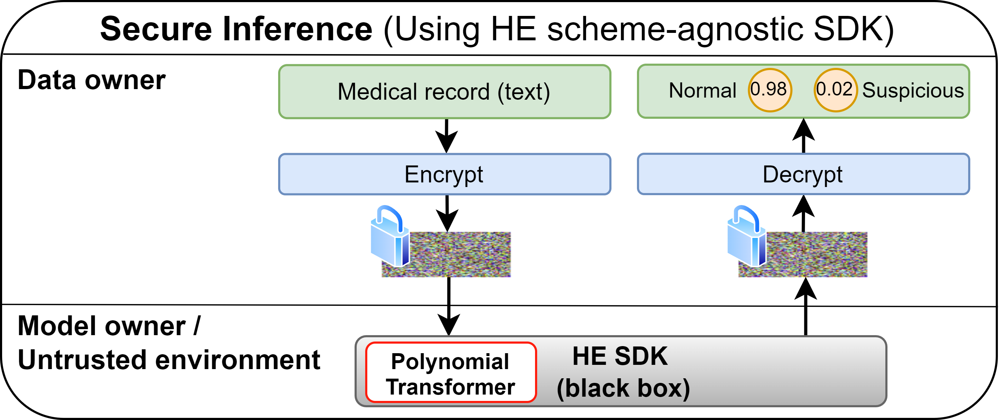
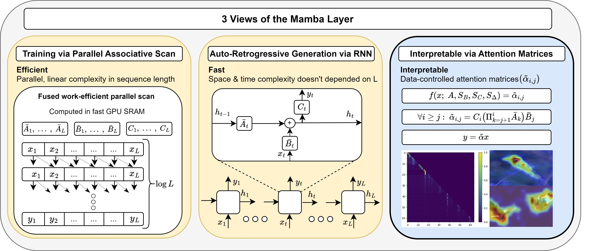
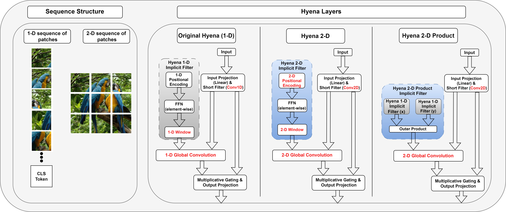
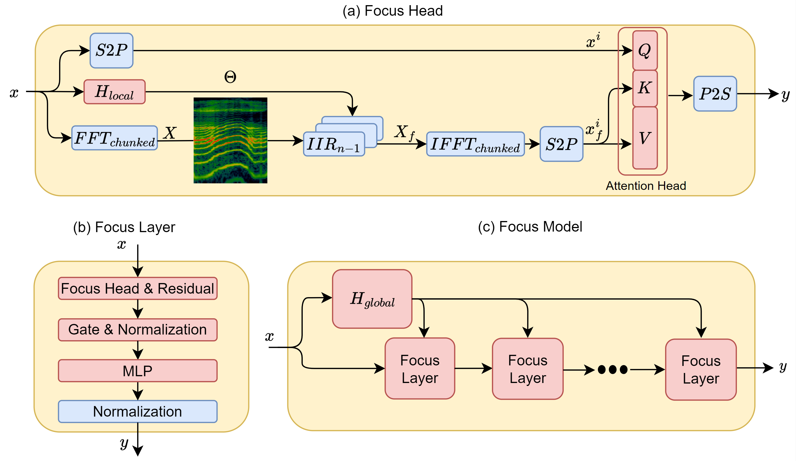
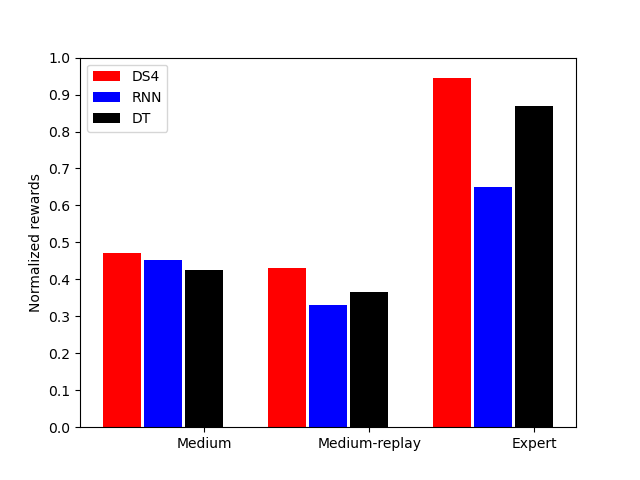
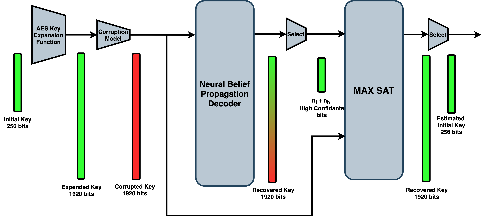

|
Itamar Zimerman I am a PhD candidate in the Blavatnik School of Computer Science at Tel Aviv University, privileged to be advised by Prof. Lior Wolf. Additionally, I work as an AI research scientist at IBM Research. |
{kind=link}
ResearchMy research focuses on modern deep learning architectures, with a particular emphasis on improving their capabilities in language modelling, computer vision, and crypto applications. I am passionate about developing architectures and understanding their design principles, especially transformers and state-space layers. Representative papers are highlighted. Selected Publications |

|
Viewing Transformers Through the Lens of Long Convolutions Layers
I. Zimerman, L. Wolf We investigate the design principles that enable long-range layers, such as state-space models and Hyena. ICML, 2024 |
|

|
Converting Transformers to Polynomial Form for Secure Inference Over Homomorphic Encryption
I. Zimerman, M. Baruch, N. Drucker, G. Ezov, O. Soceanu, L. Wolf We investigate the design principles that enable long-range layers, such as state-space models and Hyena. ICML, 2024 |
|

|
The Hidden Attention of Mamba Models
A. Ali, I. Zimerman, L. Wolf We investigate the design principles that enable long-range layers, such as state-space models and Hyenas, to outperform transformers on LRD tasks. Arxiv, 2024 |

|
A 2-Dimensional State Space Layer for Spatial Inductive Bias
E. Baron, I. Zimerman, L. Wolf We investigate the design principles that enable long-range layers, such as state-space models and Hyena. ICLR, 2024 |
|

|
Multi-Dimensional Hyena for Spatial Inductive Bias
I. Zimerman, L. Wolf, We investigate the design principles that enable long-range layers, such as state-space models and Hyena. AISTATS, 2024 |
|

|
Focus Your Attention (with Adaptive IIR Filters)
S. Lutati, I. Zimerman, L. Wolf, We investigate the design principles that enable long-range layers, such as state-space models and Hyena. EMNLP, 2023 (Oral presentation) |
|

|
Decision S4: Efficient Sequence-Based RL via State Spaces Layers
S. Bar-David, I. Zimerman, E. Nachmani, L. Wolf We investigate the design principles that enable long-range layers, such as state-space models and Hyena. ICLR, 2023 |
|

|
Recovering AES Keys with a Deep Cold Boot Attack
I. Zimerman, E. Nachmani, L. Wolf We investigate the design principles that enable long-range layers, such as state-space models and Hyena. ICML, 2021 |
|
This page design is based on a template by Jon Barron. |